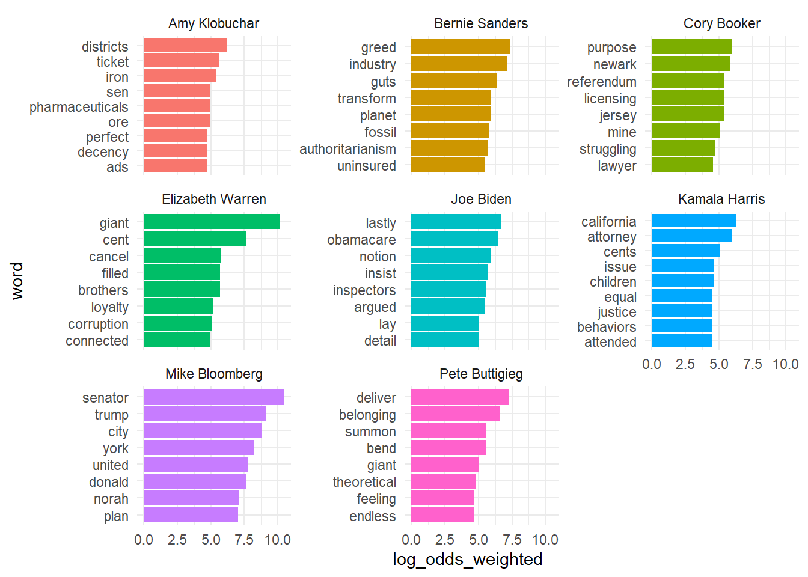
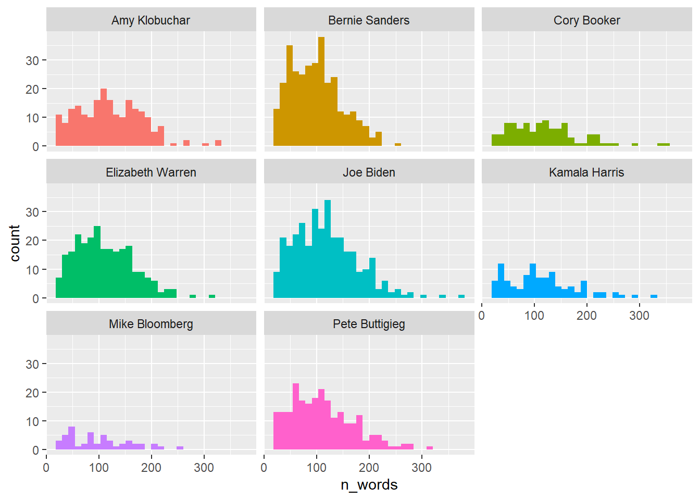
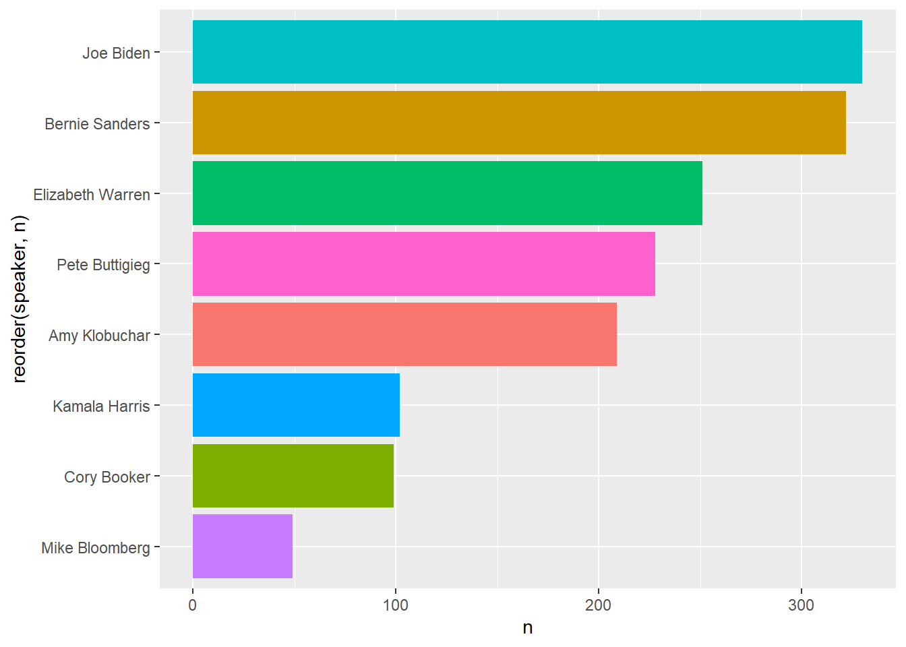
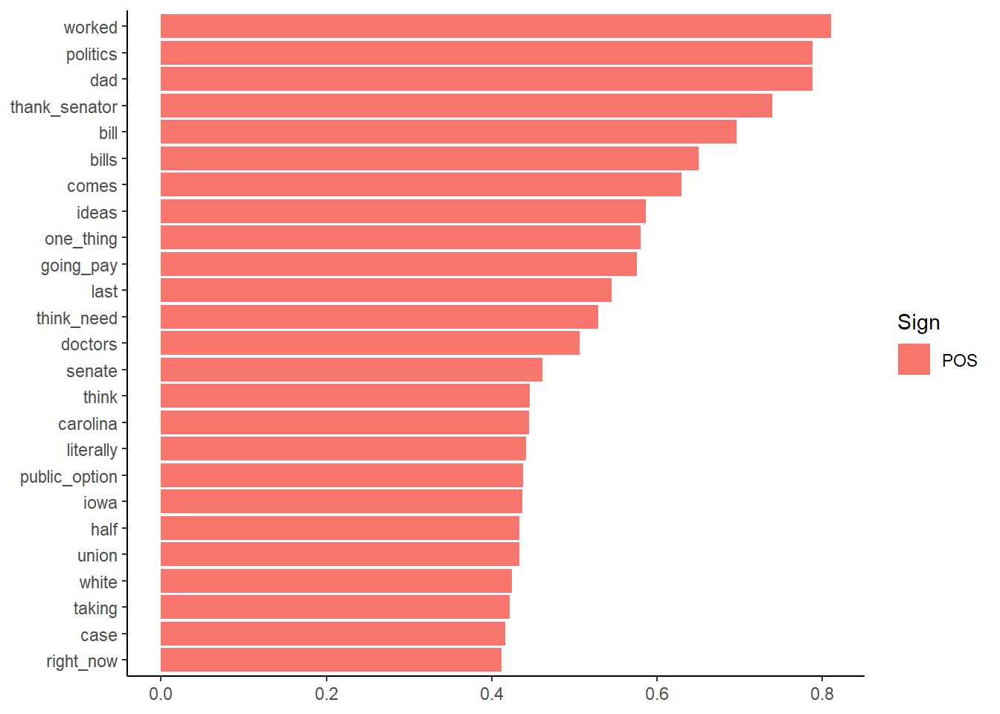
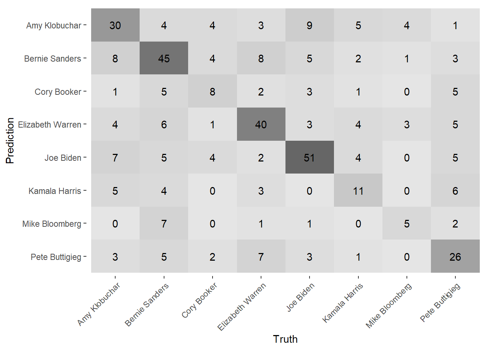
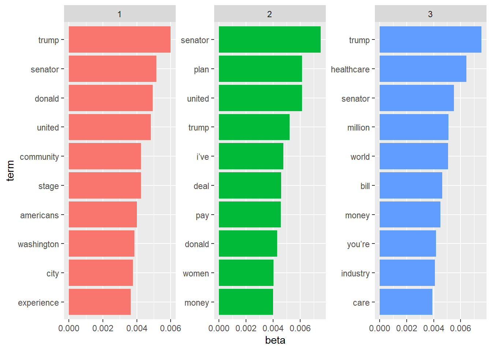

This project is intended to analyze the 2020 Democratic Presidential candidates’ performances in the eleven debates.
We’ll start off by creating a tibble of the transcripts of the debates, with a row for each response given by a candidate.
I scraped the transcripts from various sources, because no single source seemed to have transcripts for every debate. Unfortunately, that meant that the regex varied by debated, and so creating a function to automate this process would be much more difficult.
library(tidyverse)
library(rvest)
library(httr)
library(lubridate)
library(tidytext)
library(tidylo)
library(tidymodels)
library(textrecipes)
library(topicmodels)
library(vip)## Debate 1 pt 1 - Miami
html <- read_html("https://www.nytimes.com/2019/06/26/us/politics/democratic-debate-transcript.html")
debate1_1 <- html_nodes(html, ".StoryBodyCompanionColumn")
debate1_1 <- tibble(transcript = html_text(debate1_1, trim = TRUE))
debate1_1 <- debate1_1 %>%
mutate(debate = 1) %>%
separate_rows(transcript, sep = "[\\?\\.\\)\\’a-z](?=[A-Z]{2,})") %>%
separate(transcript, sep = "\\:", into = "speaker", remove = FALSE)## Warning: Expected 1 pieces. Additional pieces discarded in 535 rows [2, 3, 4, 5,
## 6, 7, 8, 9, 10, 11, 12, 13, 14, 15, 16, 17, 18, 19, 20, 21, ...].I’ll hide the rest of the scraping code since it’s long and repetitive, but the idea is to repeat the above process for each debate, combine each dataframe, then do a little final cleaning.
So now we’ve got a tibble called “candidates_only” with the transcript, the candidate, and the debate number. Here’s what it looks like:
candidates_only %>%
glimpse()## Rows: 3,525
## Columns: 4
## $ transcript <chr> "Thank you. It’s good to be here", "So I think of it thi...
## $ speaker <chr> "Elizabeth Warren", "Elizabeth Warren", "Amy Klobuchar",...
## $ debate <dbl> 1, 1, 1, 1, 1, 1, 1, 1, 1, 1, 1, 1, 1, 1, 1, 1, 1, 1, 1,...
## $ line_id <chr> "id_1", "id_2", "id_3", "id_4", "id_5", "id_6", "id_7", ...Next we can use the tidytext package to transform the dataframe so that rows contain a single word spoken by that candidate. We’ll remove stopwords using tidytext, and then remove a few additional words, including contractions and the names of candidates.
Then we can use the tidylo package to see the weighted log odds of each candidate using a particular word.
custom_stopwords <- c("it's", "biden", "steyer", "harris", "warren",
"buttigieg","klobuchar", "booker", "yang", "sanders", "that's",
"i'm", "it’s", "i’m", "01", "people", "12", "that’s", "we’re",
"02", "don’t", "we’ve", "bloomberg", "time", "Senator",
"america", "country", "president", "bring", "american",
"pete", "bernie", "elizabeth", "mike", "cory", "joe",
"kamala", "amyklobuchar.com", "amy", "warre",
"peteforamerica.com", "ilia", "calderón")
candidates_words <- candidates_only %>%
unnest_tokens(word, transcript) %>%
anti_join(stop_words, by = c("word" = "word")) %>%
filter(!word %in% custom_stopwords)
candidates_words %>%
filter(speaker %in% c(
"Joe Biden", "Bernie Sanders", "Elizabeth Warren", "Pete Buttigieg",
"Amy Klobuchar", "Cory Booker", "Kamala Harris",
"Mike Bloomberg")) %>%
add_count(speaker, name = "total_words") %>%
group_by(speaker) %>%
count(word, sort = TRUE) %>%
mutate(word = str_remove_all(word, "[:punct:]")) %>%
bind_log_odds(set = speaker, feature = word, n = n) %>%
group_by(speaker) %>%
top_n(8) %>%
ungroup() %>%
mutate(word = factor(word),
word = reorder_within(word, log_odds_weighted, speaker)) %>%
ggplot(aes(x = log_odds_weighted, y = word, fill = speaker)) +
geom_col(show.legend = FALSE) +
facet_wrap(~speaker, scales = "free_y") +
scale_y_reordered() +
theme_minimal()## Selecting by log_odds_weighted
I’m pretty happy with how this turned out, as these seem to capture the primary messages of each candidate:
OK, now let’s build a model to predict which of the top 8 candidates said a particular line in the debates. Are the candidates’ debate arguments distinct from one another enough to build a model around? We’ll see!
First, do a little more cleaning and EDA before we model. First, we want to filter out any short lines, like interruptions that only contain a few words. So we’ll tokenize the text, add a column with word counts per debate line, and then filter for any below 25.
Then we’ll take a look at the distributions of word counts per candidate lines (which also shows who talked the most in the debates!).
Finally, we’ll get the total number of lines spoken per candidate. Biden and Bernie have the most, in large part to their extra debate together.
library(tokenizers)
candidates_only2 <- candidates_only %>%
filter(speaker %in% c(
"Joe Biden", "Bernie Sanders", "Elizabeth Warren", "Pete Buttigieg",
"Amy Klobuchar", "Cory Booker", "Kamala Harris",
"Mike Bloomberg")) %>%
mutate(n_words = tokenizers::count_words(transcript)) %>%
filter(n_words > 25)
## histogram
candidates_only2 %>%
ggplot(aes(n_words, fill = speaker)) +
geom_histogram() +
theme(legend.position = "none") +
facet_wrap(~speaker) ## `stat_bin()` using `bins = 30`. Pick better value with `binwidth`.
candidates_only2 %>%
count(speaker) %>%
ggplot(aes(n, reorder(speaker, n), fill = speaker)) +
geom_col() +
theme(legend.position = "none")
Now we can move on to the modeling itself. We’ll create training and testing data, then define a preprocessing recipe that filters our stop words as well as the custom stopwords list I used above. I upsample because there’s a significant difference between the number of lines spoken by Biden at the top and Bloomberg at the bottom.
We’ll start off with a regularized glmnet model, tuning for the number of tokens and the penalty used for regularization. It uses n-grams of two tokens as well. I also did an xgboost model, but I won’t actually run that code for this post, because it took nearly 25 hours to run shocked emoji and actually performed a little worse than the glmnet model below.
candidates_only3 <- candidates_only2 %>%
select(line_id, speaker, transcript)
set.seed(123)
candidates_split <- initial_split(candidates_only3)
candidates_train <- training(candidates_split)
candidates_test <- testing(candidates_split)
candidates_folds <- vfold_cv(candidates_train, folds = 10, strata = speaker)
glmnet_recipe <- recipe(speaker ~ ., data = candidates_train) %>%
update_role(line_id, new_role = "id") %>%
step_string2factor(speaker) %>%
step_tokenize(transcript) %>%
step_stopwords(transcript) %>%
step_stopwords(transcript, custom_stopword_source = custom_stopwords) %>%
step_ngram(transcript, num_tokens = 2, min_num_tokens = 1) %>%
step_tokenfilter(transcript, max_tokens = tune::tune(), min_times = 10) %>%
step_tfidf(transcript) %>%
step_normalize(recipes::all_predictors()) %>%
themis::step_upsample(speaker)## Registered S3 methods overwritten by 'themis':
## method from
## bake.step_downsample recipes
## bake.step_upsample recipes
## prep.step_downsample recipes
## prep.step_upsample recipes
## tidy.step_downsample recipes
## tidy.step_upsample recipes
## tunable.step_downsample recipes
## tunable.step_upsample recipesglmnet_spec <- multinom_reg(penalty = tune(), mixture = 1) %>%
set_mode("classification") %>%
set_engine("glmnet")
glmnet_workflow <- workflow() %>%
add_recipe(glmnet_recipe) %>%
add_model(glmnet_spec)
glmnet_grid <- grid_max_entropy(
penalty(range = c(-4, 0)),
max_tokens(),
size = 25)
all_cores <- parallel::detectCores(logical = FALSE)
cl <- parallel::makePSOCKcluster(all_cores)
doParallel::registerDoParallel(cl)
set.seed(1234)
glmnet_tune <- tune_grid(
glmnet_workflow,
resamples = candidates_folds,
grid = glmnet_grid,
metrics = metric_set(accuracy, roc_auc),
control = control_grid(save_pred = TRUE, pkgs = c('textrecipes'))) Here’s the code for the glmnet, in case you’re interested:
xgboost_recipe <- recipe(formula = speaker ~ ., data = candidates_train) %>%
update_role(line_id, new_role = "id") %>%
step_string2factor(speaker) %>%
step_tokenize(transcript) %>%
step_stopwords(transcript) %>%
step_stopwords(transcript, custom_stopword_source = custom_stopwords) %>%
step_ngram(transcript, num_tokens = 2, min_num_tokens = 1) %>%
step_tokenfilter(transcript, max_tokens = tune::tune(), min_times = 10) %>%
step_tfidf(transcript) %>%
step_normalize(recipes::all_predictors()) %>%
themis::step_upsample(speaker)
xgboost_spec <- boost_tree(
trees = 1000,
min_n = tune(),
tree_depth = tune(),
learn_rate = tune(),
loss_reduction = tune(),
sample_size = tune()) %>%
set_mode("classification") %>%
set_engine("xgboost")
xgb_grid <- xgboost_spec %>%
parameters() %>%
grid_latin_hypercube(size = 20)
xgboost_workflow <- workflow() %>%
add_recipe(xgboost_recipe) %>%
add_model(xgboost_spec)
all_cores <- parallel::detectCores(logical = FALSE)
cl <- parallel::makePSOCKcluster(all_cores)
doParallel::registerDoParallel(cl)
tictoc::tic()
set.seed(72008)
xgboost_tune <- tune_race_anova(
xgboost_workflow,
resamples = candidates_folds,
grid = xgb_grid,
metrics = metric_set(accuracy, roc_auc),
control = control_grid(save_pred = TRUE, pkgs = c("textrecipes")))
tictoc::toc()
beepr::beep(2)
show_best(xgboost_tune, "accuracy")
show_best(xgboost_tune, "roc_auc")
xgb_pred <- collect_predictions(xgboost_tune)
xgb_pred %>%
filter(id == "Fold01") %>%
conf_mat(speaker, .pred_class) %>%
autoplot(type = "heatmap")show_best(glmnet_tune, "accuracy")## # A tibble: 5 x 8
## penalty max_tokens .metric .estimator mean n std_err .config
## <dbl> <int> <chr> <chr> <dbl> <int> <dbl> <chr>
## 1 0.00189 892 accuracy multiclass 0.567 10 0.00988 Preprocessor01_Mo~
## 2 0.000118 941 accuracy multiclass 0.555 10 0.00995 Preprocessor15_Mo~
## 3 0.000111 724 accuracy multiclass 0.545 10 0.0116 Preprocessor08_Mo~
## 4 0.000475 538 accuracy multiclass 0.537 10 0.0138 Preprocessor18_Mo~
## 5 0.00115 715 accuracy multiclass 0.537 10 0.00813 Preprocessor03_Mo~show_best(glmnet_tune, "roc_auc")## # A tibble: 5 x 8
## penalty max_tokens .metric .estimator mean n std_err .config
## <dbl> <int> <chr> <chr> <dbl> <int> <dbl> <chr>
## 1 0.00189 892 roc_auc hand_till 0.832 10 0.00819 Preprocessor01_Mod~
## 2 0.000111 724 roc_auc hand_till 0.831 10 0.00589 Preprocessor08_Mod~
## 3 0.00115 715 roc_auc hand_till 0.830 10 0.00643 Preprocessor03_Mod~
## 4 0.000118 941 roc_auc hand_till 0.830 10 0.00749 Preprocessor15_Mod~
## 5 0.000475 538 roc_auc hand_till 0.825 10 0.00693 Preprocessor18_Mod~lasso_pred <- collect_predictions(glmnet_tune)
best_roc <- select_best(glmnet_tune, "roc_auc")
lasso_wf_final <- finalize_workflow(glmnet_workflow, best_roc)
## variable importance
library(vip)
lasso_wf_final %>%
fit(candidates_train) %>%
pull_workflow_fit() %>%
vi(lambda = best_roc$penalty) %>%
slice_head(n = 25) %>%
mutate(Importance = abs(Importance),
Variable = str_remove(Variable, "tfidf_transcript_"),
Variable = fct_reorder(Variable, Importance)) %>%
ggplot(aes(Importance, Variable, fill = Sign)) +
geom_col() +
theme_classic() +
labs(x = NULL, y = NULL)
So, not amazing performance, but this is a difficult problem with 8 classes and not a ton of observations.
But the variable importance plot is interesting. “Thank (you,) Senator” is the most important n-gram, followed closely by “think”. “Think” was used overwhelmingly by Amy Klobuchar (98 times), followed by Bernie (81).
## final model, evaluate with test data
final_res <- lasso_wf_final %>%
last_fit(candidates_split, metrics = metric_set(accuracy, roc_auc))
collect_metrics(final_res)## # A tibble: 2 x 4
## .metric .estimator .estimate .config
## <chr> <chr> <dbl> <chr>
## 1 accuracy multiclass 0.544 Preprocessor1_Model1
## 2 roc_auc hand_till 0.847 Preprocessor1_Model1final_res %>%
collect_predictions() %>%
conf_mat(speaker, .pred_class) %>%
autoplot(type = "heatmap") +
theme(axis.text.x = element_text(angle = 45, hjust = 1))
The good news is that we didn’t overfit, even if our test accuracy was still just 57%. But the confusion matrix was pretty solid nevertheless, mostly getting the right person for each test line.
We can also do a little LDA to see what the candidates talked about. We cast our previous dataframe as a document-term matrix, then run LDA, collecting the beta probabilities for words in each of the three topics we’ll look at.
candidates_dtm <- candidates_only3 %>%
rename(text = transcript) %>%
unnest_tokens(word, text) %>%
anti_join(stop_words, by = "word") %>%
anti_join(tibble(word = custom_stopwords)) %>%
count(speaker, word, sort = TRUE) %>%
cast_dtm(speaker, word, n)## Joining, by = "word"candidates_lda <- LDA(candidates_dtm, k = 3, control = list(seed = 123))
candidates_topics <- candidates_lda %>%
tidy(matrix = "beta")
candidates_top_terms <- candidates_topics %>%
group_by(topic) %>%
top_n(10, abs(beta)) %>%
ungroup() %>%
arrange(topic, desc(beta))
candidates_top_terms %>%
mutate(term = reorder_within(term, beta, topic)) %>%
ggplot(aes(beta, term, fill = factor(topic))) +
geom_col(show.legend = FALSE) +
facet_wrap(~ topic, scales = "free") +
scale_y_reordered()
I don’t know exactly what I expected, but there don’t seem to be huge differences between the three topics. “Plan”, “Trump”, “healthcare”, and “united” are common to all topics.